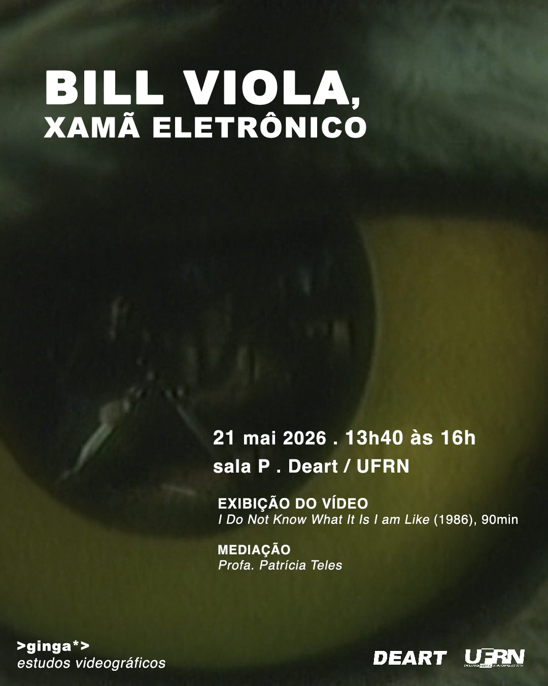
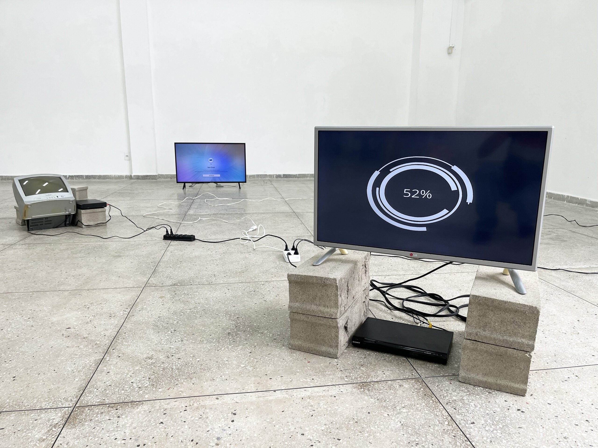
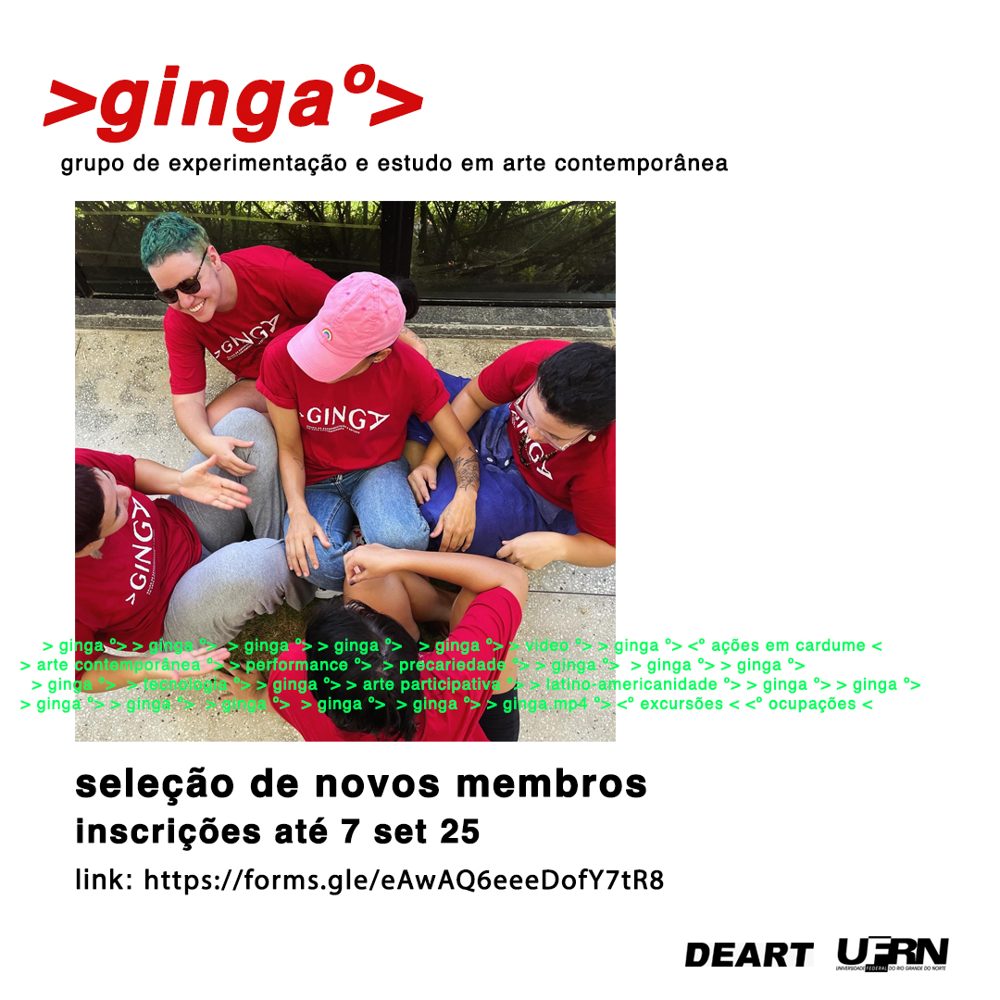
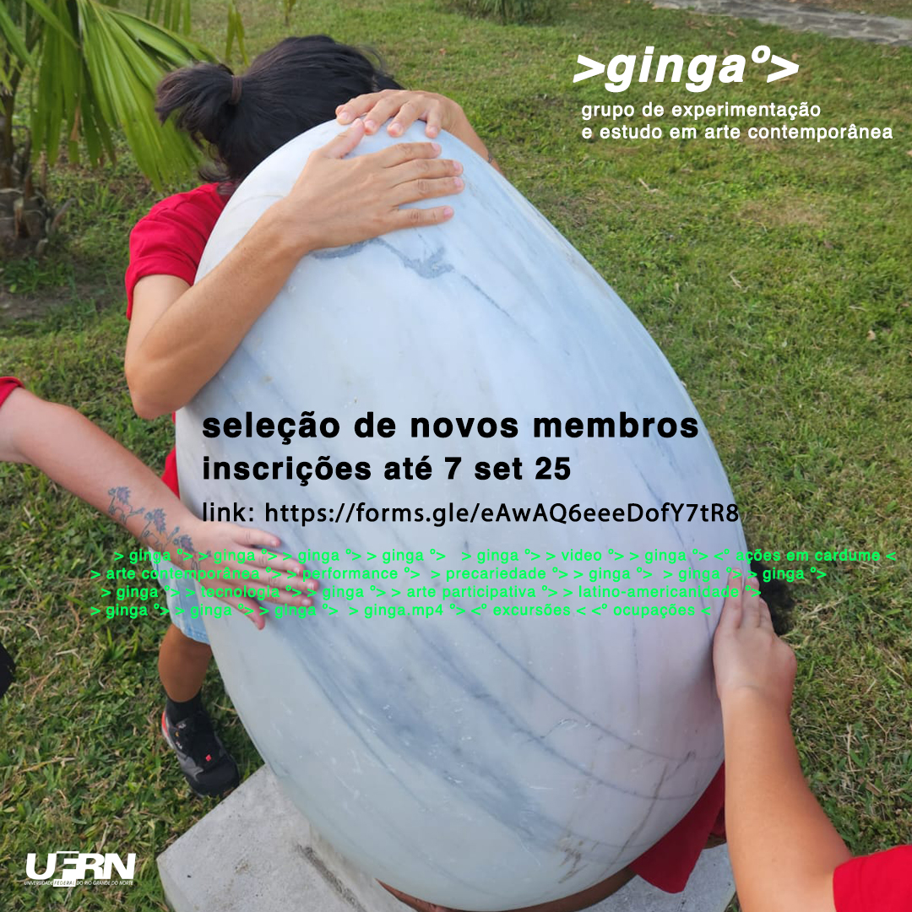

> notícias º>
2026 - BILL VIOLA: xamã eletrônico
🐟 O GINGA - grupo de experimentação e estudo em arte contemporânea convida a comunidade acadêmica a participar do nosso encontro:

🦉BILL VIOLA, xamã eletrônico
📅 21 de maio de 2026
⏰ 13:40 às 16:00 horas
📍 Sala P . Deart / UFRN
Exibição do vídeo: I Do Not Know What It Is I am Like (1986), 90 minutos
Mediação: Profa. Patrícia Teles
Bill Viola (EUA, 1951 - 2024) “é um xamã que recorre às máquinas eletrônicas como o feiticeiro dispõe de um arsenal de objetos e fetiches para invocar as forças e as potências, e canalizá-las com o intuito de empreender uma transformação” (Laymert, 2003, p.185)
📚 LAYMERT, Garcia dos Santos. Politizar as novas tecnologias. São Paulo: Editora 34, 2003.
2025 - Ginga: a arte potiguar que dança entre o precário e o político
Saiba mais (Natal, 1 de setembro de 2025):
https://saibamais.jor.br/2025/09/ginga-a-arte-potiguar-que-danca-entre-o-precario-e-o-politico/

2025 - Seleção de novos membros
Temporada de desova >ginga*>
nosso cardume vai crescer.
* inscrições encerradas *

